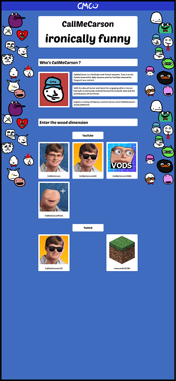
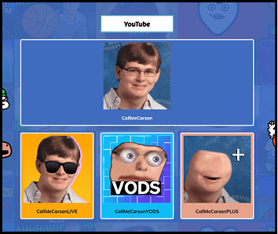
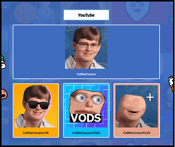

Hi! My name is Benjamin
Web Design Student
HTML, CSS, JS, JSON
ABOUT ME
Surname : Benjamin
Name : Brihaye
Nickname : Benji
Age : 21
Birthday : November 6
Hobbies
Video games, music, reading (books and mangas), movies, YouTube, Twitch, travelling, walking
Top 4s
Movies
- Titanic
- Oppenheimer
- Alien
- Alien Covenant
Games
- Omori
- Minecraft
- Alien Isolation
- Until Dawn
Mangas
- Assassination Classroom
- Blue Lock
- Frieren
- Chainsaw Man
Project Janus - CallMeCarson
2024, lead designer and lead developer
The purpose of this school project was to create a website about an influencer. To make a page promoting him, then one talking about the influencer controversies and problems, and a page displaying his data.
Moodboard

For the moodboard, I decided to use assets of CallMeCarson’s YouTube channels, his logos and banners. Colors comes from the YouTube assets and his official website. The logo is his official one. For the fonts, I used Poetsen One (which is the one he uses to subtitle his videos), and Muli (which is his website’s font).
Assets


I used a compilation of his YouTube thumbnails to use as a background image on the website and break the plain blue background.
For the buttons linking to his socials, I decided for it to be mainly designed around his socials’ logos, as this is the most recognizable part of his channel, and a part of his personality. So each button contains the logo and the name he uses on this account. Hovering on the button will display a description on what he does there.
Iterations

From the first draft, I decided to clean the area. On a designer side, the plain white section on a plain blue background was ugly. I decided to separate everything in different sections, so the user could breathe between them. It is also more easily readable because each sections stands out more.
But the buttons also felt to white, so I decided to color them with the primary color of the logo it is tied with.
Final Design


 


Project Dataplay - McDollars
2025, fetch and JavaScript developer
Project Dataplay was a school project centered around the use of data to create an interactive experience. McDollars is centered around the Big Mac Index, the cost of its ingredients, and whether it relates to global inflation.
Moodboards

The first moodboard is targeted towards our art direction. We wanted something that feels retro and that reminds people of McDonald’s and money. We used the Burger King font which gives a retro 1970’s vibe. And we used some assets to create a really good retro art direction.
The second moodboard was for the website. We had to make a choice, either inspiring us from fast foods website. Or inspiring us from the ordering terminal’s interfaces.
Designs
We decided to present the website in two parts. The first part present the project and the website, giving context for users. When scrolling, it also show graphs of the raw data we collected.
The second part appears after clicking the button in the first part. On the left, the would be a listing of dates, listed as to look like the left side of an ordering terminal. On the right side, there is the ticket, which show the data for the selected year, and a visual assistance (how many Big Mac of the selected year would you need to buy today’s Big Mac).
Final Design


Project Janus - CallMeCarson
The purpose of this school project was to create a website about an influencer. To make a page promoting him, then one talking about the influencer controversies and problems, and a page displaying his data.
VISIT WEBSITE
Project Dataplay - McDollars
Project Dataplay was a school project centered around the use of data to create an interactive experience. McDollars is centered around the Big Mac Index, the cost of its ingredients, and whether it relates to global inflation.
VISIT WEBSITEProject RUX - Lay Out Your Layout
Lay Out Your Layout (LOL) was part of Project RUX, a project targeted at improving the Web Design classroom a better place to study. LOL is a website made into a terminal, it is an index of websites that students could use to improve themselves in any area of Web Design
VISIT WEBSITEProject Decembre - La Main Gauche de la Nuit
Project Decembre was a project targeted at creating a landing page to buy a product, which we had to choose from a list. My project was around the book “La Main Gauche de la Nuit“ Ursule K. Le Gain.
 VISIT WEBSITE
VISIT WEBSITE
Project Design Fiction - KEB
Project Design Fiction is a project asking us to think about an idea from the near future and doing a website about it. I decided to do something about robotic bees. KEB is a fictional website about a rebel group against those robotic bees.
VISIT WEBSITECredits
Homepage
- background image by @frogapples_ on X. (https://x.com/frogapples_/status/1054322555203403777/photo/1)
- Arrow button taken from Iconify on Figma
- Favicon by @drillramen on X. Original Character Design by OMOCAT. (https://x.com/drillramen/status/1558137425444368384/photo/1)
- About Me image by @smokiant on X. (Original post deleted)
- All images related to project Janus are from my website (https://www.benjaminbrihaye.com/projets/janus/). Some images there come from other sources.
- All images related to McDollars (or project Dataplay), come from my website (https://www.benjaminbrihaye.com/projets/mcdollars/). Assets in that website made by Pearl Bondele.
- All images related to LOL (or project RUX), come from my website (https://www.benjaminbrihaye.com/projets/lol/)
- All images related to La Main Gauche de la Nuit (or project Decembre), come from my website (https://www.benjaminbrihaye.com/projets/decembre/). Some assets are official assets of the book.
- background image of the “ABOUT ME” button is a promotional GIF made by Steam for the Autumn Sales 2024. Image can be bought with Steam Points at this link (https://store.steampowered.com/points/shop/app/2861700/reward/342134)
- background image of the “CASE STUDY” button comes, as far as I’ve found, from Tenor GIF by AsyaTheAlienn (https://tenor.com/fr/view/pixel-study-gif-20419806)
- background image of the “PROJECTS” button made by Gustavo Pinto Vilas Boas on ArtStation (https://www.artstation.com/artwork/blJqmr)
- background image of the “CREDITS” button comes, as far as I’ve found, from Tenor GIF by SchtroumpfAssassin (https://tenor.com/fr/view/hideo-kojima-credits-video-game-gif-14466133)
- Bee from the Design Fiction button animation comes from Vecteezey (https://www.vecteezy.com/png/52645116-honey-bee-top-view-for-pollination-illustrations-on-transparent-background)
- ChatGPT used for a “position: sticky” for the navigation. Prompt (Comment faire pour que la longueur d'un élément en "position: fixed" soit toujours relative à la taille de son parent ?)
- ChatGPT used to stop links in credits from getting out the window "word-break: break-all". Prompt (en CSS, comment faire pour que les liens a ne sortent pas de la fenêtre)
- ScrollTop buttons. Code copied from w3schools (https://www.w3schools.com/howto/howto_js_scroll_to_top.asp)
Design Fiction
- Text written by me, then corrected by ChatGPT, then rewritten by me. Example prompt (Voici un texte que j'ai écrit. Dans le prochain message, je t'enverrai un autre texte. J'aimerais que tu l'adaptes au ton du premier texte. // Text //) -> (Voici le second texte : // Text //)
- KEB Logo generated by the Photoshop AI. Prompt not determined.
- All images are AI generated by Google’s AI Gemini.
- ChatGPT used in code for an ‘active’ state. Prompt (//code // Pourquoi mon "li" avec la classe ".active" ne reçoit pas le style ?)
- ChatGPT used in code for a div in “height: fit-content” that wasn’t fitting to content. Prompt (//code // Je possède cette div avec une image à l'intérieur, la largeur est bien adaptée au contenu, mais la hauteur est légèrement plus grande. Pourquoi ?)
- ChatGPT used to make multiple vertical header. Prompt (//code// Je veux changer le letter-spacing du h3, mais à chaque fois que je l'augmente, la tailel de".sectionHeader" augmente aussi)